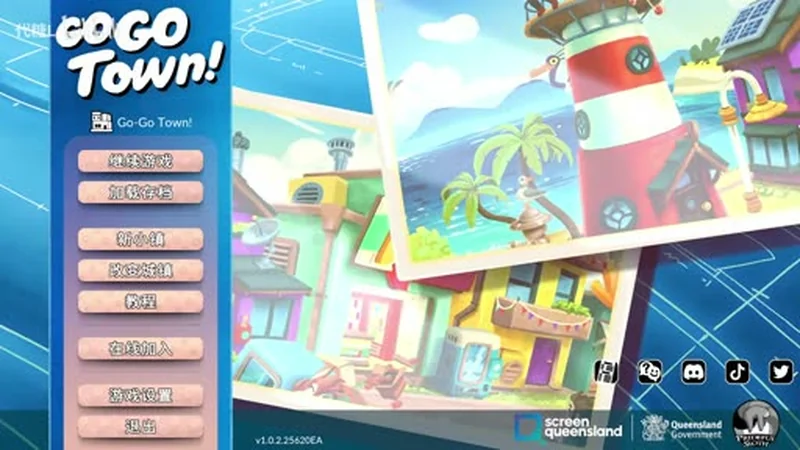
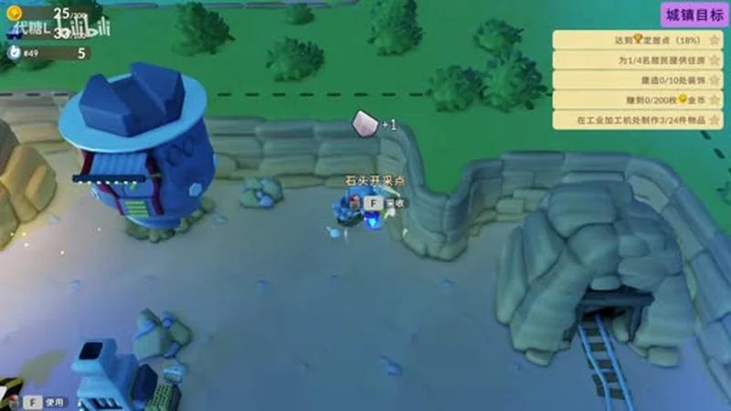
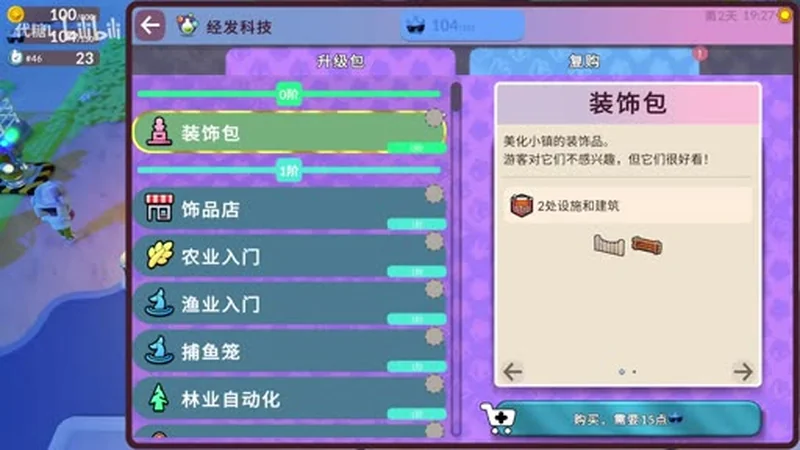
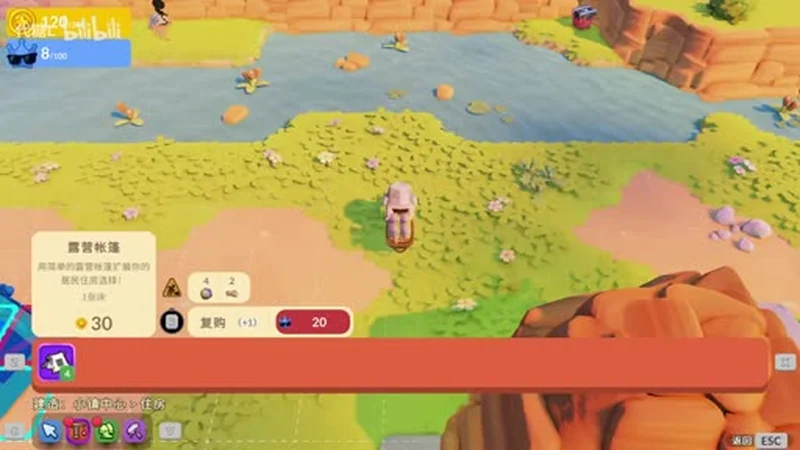
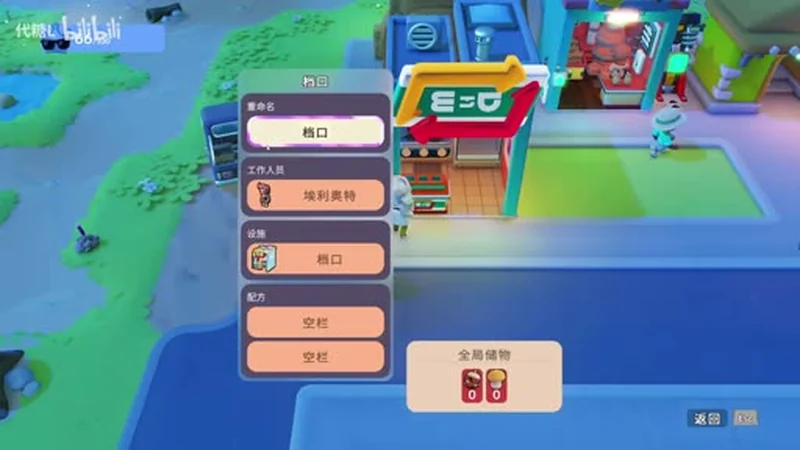

Go-Go Town! Beginner's Guide — First Week Tips, Town Goals & Automation
Game: Go-Go Town! (狗狗镇) | Developer: Prideful Sloth | Publisher: Prideful Sloth | Release: July 16, 2026 (Steam 1.0, after two years of Early Access) | Price: $27.99 base ($20.99 during the 1.0 launch discount) | Platforms: PC (Steam), Nintendo Switch, Switch 2
I was not prepared for how quickly my cozy town became a logistics problem. Go-Go Town! is Prideful Sloth's town-building + farming crossover that launched its 1.0 version on July 16, 2026 across PC, Switch and Switch 2 — and it is the rare cozy game that quietly turns into an automation puzzler the moment you hire a second worker. One minute you are placing a lamp post; the next you are staring at a delivery route that stalls because nobody is refining your planks.
This guide covers what I wish I knew in my first week — and it is based on the actual 1.0 build: the TownCo core loop, how the Town Goals system is the real tutorial, which EGO Tech unlocks to grab first, why recruiting a townie does not hire a worker, the exact moment to buy your first courier, and which early items are actually worth selling.

Guide data gathered from the Steam store page and 1.0 patch notes, launch-week reviews, community walkthroughs, and the 1.0 flow playthrough by the Chinese community creator 代糖L on Bilibili (the 8-part 狗狗镇1.0正式版 流程合集). Prices and details reflect the July 2026 1.0 build — always check the Steam page before buying.
What Is Go-Go Town!?
Go-Go Town! is a cozy-but-deep city-building and life-sim game where you play a hands-on mayor rebuilding a derelict town for the mysterious TownCo. Unlike pure farming sims, most of the work on the map can be handed to NPC workers — so your real job is designing production lines, routing resources, and laying out districts rather than swinging a pickaxe forever. The community often calls it "Stardew's town, Anno's supply chains."
| Fact | Detail |
|---|---|
| Developer / Publisher | Prideful Sloth (Yonder, Grow: Song of the Evertree) |
| Steam release | July 16, 2026 (1.0) · Early Access from June 18, 2024 |
| Price | $27.99 base · $20.99 during the 1.0 launch discount (Switch ~$26.99 / Switch 2 ~$29.69) |
| Rating | "Very Positive" (~81% at launch, up to 93% positive reported) |
| Co-op | Online co-op up to 4 players on Steam · local co-op on Switch 2 |
| 1.0 additions | Tech tree · Creative Mode · Treasure Hunting · Import app · Rebuy system · off-road driving · Lost & Found · sprinklers |
| Genre | Town building · farming · life sim · cozy automation |
The 1.0 release is a big upgrade over Early Access. The refreshed tech tree gives you agency over what to unlock, Creative Mode is a separate sandbox map with no money or campaign limits, Treasure Hunting adds fish/insects/fossils/gems/relics to collect and display, and online co-op for four is the headline feature on Steam.
The Core Loop — TownCo, Tourists and Townies
Every hour of Go-Go Town! circles the same loop:
Manage town → attract tourists → recruit residents → assign them jobs → build more town → attract more tourists.
The town is rated continuously, and the TownCo rank you climb by completing town goals is your progression key. More and better services bring more tourists (and rarer ones); tourists who stay happy become candidates to move in; residents you house and employ then run the services that attract the next wave. If you only remember one thing, remember this loop — every individual system (shops, couriers, decorations, farming) is a spoke feeding that wheel.

Town Goals — the Real Tutorial
The game's tutorial is short, but the Town Goals app on your in-game phone is what actually teaches you the game. It always shows one headline goal plus sub-tasks with a completion percentage, and finishing a goal set triggers the next one. From my first 40 minutes in the 1.0 build, the goals walked me through, in order:
- Build basic industry — a gas station, a power station and a convenience store (the early service buildings that give tourists somewhere to go).
- Construct the Town Hall — this is your first "recipe quest": craft the required planks and processed items at an industrial processing machine, then place the shell.
- Provide housing for residents — 1/4, then 2/4 residents housed. Tents are your cheap first option; small houses come later.
- Place decorations — the goals ask for a target number (e.g. 0/10) of decorations around town.
- Earn coins — e.g. reach 200 coins collected, which nudges you to actually run your shops.
Two goal habits I'd build from day one:
- Finish one required project before starting the next. Unfinished buildings sit half-built, produce nothing, and clutter your construction menu.
- Don't build a second copy of a goal object while the reward is unclaimed. The game tracks goal objects; building ahead can leave you with an extra you didn't need.
The goals also introduce the bulletin board — a separate source of build orders, usually phrased as "tourist desire > exploration" or similar. Read the desire tag before building; it tells you which visitor need that building serves.
EGO Tech — What to Unlock First
EGO (economic development points) is the game's second currency, earned alongside coins. The EGO Tech app is a full tech tree where you spend EGO to unlock upgrades, buildings, and features. In the 1.0 build the tree is organized into packages — and the UI is explicit about what each does: upgrade packs, decoration packs ("tourists aren't interested in them, but they look nice!"), shop packages, and activity unlocks like farming, fishing and forestry automation.

My first-week unlock priority:
- Farming Introduction — the tutorial zone already teaches you this, but the EGO unlock opens the farming economy properly. Forage Seed Bushes repeatedly in the Farming Zone to unlock more crop seeds.
- Fishing Introduction + Fish Trap — fishing is a solid early side income, and the trap is passive.
- Forestry Automation — the first real automation package; it starts turning wood gathering into a worker job.
- TownCo Exports (EGO Tech Tier 3, "Import and Export") — completing tasks earns tickets you can redeem for decorations (lamp posts, fences, Gothic items, even vehicles). Grab this once you have a stable few-hundred-EGO surplus.
General rule: unlock the package that removes your current bottleneck, not the cheapest one. If your shops keep running out of ingredients, the food-processing unlock beats a pretty decoration pack every time.
Housing & Residents — Recruit ≠ Hire
The single most common new-player mistake in Go-Go Town! is assuming a recruited resident automatically works. Recruiting a townie does NOT create a worker. To turn a tourist into a productive townie you must:
- Complete their personal recruitment request (usually a small fetch or build task).
- Give them housing — a tent or house placed somewhere in town.
- Open the management menu and assign an occupation.

Housing has real costs: tents are your cheap early option, small houses are noticeably more expensive, and the menu shows a rebuy price for moving a building. Place housing close to the services the resident will work — walking distance is a real factor in how fast your shops restock.
When you open the management menu you'll see the occupations by sector:
- Resource collection — Lumberjack/Forester (wood), Miner (stone/ore), Farmer (crops/livestock), Fisherman (seafood)
- Manufacturing / processing — Brickmaker/Mason, Woodworker/Carpenter, Smelter/Blacksmith, Food Processor — this is where bottlenecks happen if nobody refines raw materials
- Logistics — Courier/Delivery Driver (moves products to shops), Warehouse Manager (balances inventory)
- Maintenance / cleaning — keeps streets clean; dirty streets tank tourist satisfaction fast
Some late-game residents are more efficient in specialized roles. Once you know a premium worker, put them in a busy shop like the Sushi Bar or Day Spa — not on chopping trees.
Shops & Workers — Assigning Occupations
The shop loop is simple on paper: a shop needs a stall, a worker, stock, and a path to the road. When I assigned my first worker (the townie Elliott) to a stall, the real game clicked — the stall UI shows the worker, the global storage connection, and whether the shop has an active recipe.

Three things the game doesn't emphasize enough:
- Shops are only useful if staffed. An open shop with no worker produces nothing. Assign someone before you expect income.
- Stock has to physically reach the shop. The courier/warehouse system moves items from global storage to shop storage — if your raw materials are in the wrong storage, the shop stays empty.
- Check the six tourist desires before building more of anything. Tourists want Shopping, Hunger, Exploration, Entertainment, Rest and Health. Use the Tourist Tracker app to find the weakest service, then check the existing one: is it open, staffed, stocked, on a usable path, close to tourist routes, and on clean ground? Duplicating a service that fails any of those just doubles the problem.
Automation — When to Buy Your First Courier
Automation is where Go-Go Town! stops being cozy and starts being satisfying. But the golden rule is strict:
Automate a route only after you can complete it manually.
My test chain: Forestry worker → Storage → Courier → shop Storage → active recipe. Before buying that first courier, confirm all five links exist: the source produces the correct item, the worker actually has demand, items reach usable storage, the shop has an active recipe, and the courier building connects to a road.
And once the first courier runs:
- Buy another only when the first is moving almost continuously and a destination still runs out of stock. That is a capacity problem. A courier that never moves is not a capacity problem — it's a routing problem, and a second courier won't fix it.
Money in the First Week — What to Sell
Early coins are tight, and the sale prices of raw finds are not equal. The community consensus from launch week holds up:
| Item | Sell price | Verdict |
|---|---|---|
| 💎 Geode (from mining ore) | 12 coins | Best early find — needs Metal Ingots, but worth it |
| 🪨 Pet Rock | 10 coins | Fine fallback |
| 🪵 Wood Trinket | 10 coins | Fine fallback |
- Don't rely on selling treasures as your main income. Open the Collections app before selling a find: keep at least one copy of anything new for your collection or Town Hall display, and sell only the duplicates.
- Import is a shortcut, not a strategy. The Import app buys items/vehicles with coins — perfect for a single item blocking a Town Goal, or something you've already discovered. But if a shop needs the same ingredient daily, fix or automate the source instead of importing forever.
- Watch the weather. Windy days scatter leaf piles with seasonal decorations; after rain, a "golden hour" can literally make coins rain from the sky — on a timer, so collect fast.
Storage sizes worth knowing
| Container | Slots |
|---|---|
| 🎒 Starting backpack | 8 slots |
| 🧺 Small storage basket | 16 slots |
| 🚛 Truck | 48 slots |
Items take varying space (wood, bricks, planks and ingots take 2 slots each), so those numbers go faster than they look.
The Map — Where Things Live
The starting town is compact but the zones are spread out, so know your landmarks early:
- Mine — upper-right of the map
- Forest — lower-right
- Train station — center-upper (the train arrival is an early story beat — the goal UI announces "train's here!" when it arrives)
- Truck — on the road between mine and forest
Plan your early courier routes around those fixed points, and don't terrace over water: you can't undo pathing placed over water until you unlock Water Tiles via Expanded Fishing Tier 5 in EGO Tech.
Pro Tips & Common Mistakes
✅ Do This
- Follow the Town Goals app — it's the tutorial that doesn't say so, and it unlocks your town's rank, rewards and next goal set.
- Complete recruitment requests + housing + occupation in that order — recruit ≠ hire, every time.
- Automate a route only after you can run it manually — then add one courier at a time.
- Check the Tourist Tracker before building another service; duplication never fixes a routing problem.
- Sell Geodes over Pet Rocks, and keep one of every treasure for collections.
- Forage Seed Bushes repeatedly in the Farming Zone to expand your crop list.
- Use Import for one-off Town Goal blockers — never as a permanent supply line.
❌ Do Not Do This
- Don't recruit a townie and assume they're working — no housing, no occupation, no output.
- Don't build a second goal building before claiming the reward — you'll end up with unused stock.
- Don't terrace/path over water early — it's stuck until Expanded Fishing Tier 5.
- Don't buy a second courier while the first sits idle — that's a routing issue, not a capacity one.
- Don't sell the first copy of a treasure — collections and Town Hall displays want them.
- Don't neglect cleaning/maintenance — dirty streets silently kill tourist satisfaction.
FAQ
Is Go-Go Town! out of Early Access?
Yes. The 1.0 version launched July 16, 2026 on Steam, Switch and Switch 2, adding online co-op (up to 4 on Steam), the tech tree, Creative Mode, Treasure Hunting, the Import app, off-road driving and more.
How much does Go-Go Town! cost?
$27.99 base, $20.99 with the 25% 1.0 launch discount (sale ran until July 30, 2026). Switch versions were ~$26.99 / Switch 2 ~$29.69 during the same sale.
How do I make a resident actually work?
Recruit them (personal request), give them housing, then open the management menu and assign an occupation. Recruiting alone does nothing.
What should I unlock first in the EGO Tech tree?
Farming Introduction, then Fishing Introduction + Fish Trap, then Forestry Automation, then TownCo Exports once you have an EGO surplus. Always unlock the package that removes your current bottleneck.
What's the best early money maker?
Raw finds: Geodes sell for 12 coins vs 10 for Pet Rocks and Wood Trinkets. Later, staffed shop recipes beat raw selling — the moment you have a worker and a stocked shop, that loop out-earns manual selling fast.
How many players can play co-op?
Up to 4 online on Steam; Switch 2 supports local co-op. Sessions mix online and local players, with role-based permissions the host controls.
What are the six tourist desires?
Shopping, Hunger, Exploration, Entertainment, Rest and Health. Use the Tourist Tracker app to find the weakest, then check the existing service before building another.
🔗 Related Guides
- 🌾 Stardew Valley Complete Game Guide — the cozy-farming benchmark for crop calendars and profit loops
- 🏝️ Coral Island Guide — tropical farming, diving and town life
- ✨ Fields of Mistria Guide — another 2026 farming sim with a fresh full release
- 🏝️ Starsand Island Guide — island farming, animals and community
- 🦊 Tales of Seikyu Beginner's Guide — the yokai farming sim with the no-hoe transformation system
Guide data gathered from the Steam store page, the 1.0 patch notes, launch-week reviews, community walkthroughs, and the 1.0 flow playthrough by the Chinese community creator 代糖L on Bilibili (【Go-Go Town】狗狗镇1.0正式版 流程合集). Screenshots captured from the 1.0 build (v1.0.2). Prices and details reflect the July 2026 1.0 state and may change with updates — always check the Steam page before buying.